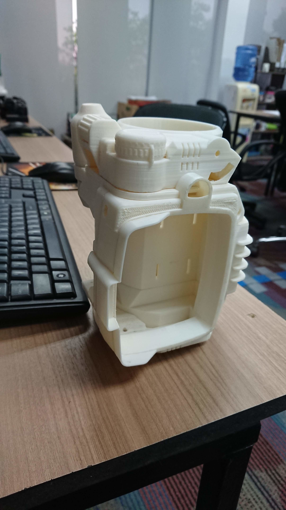
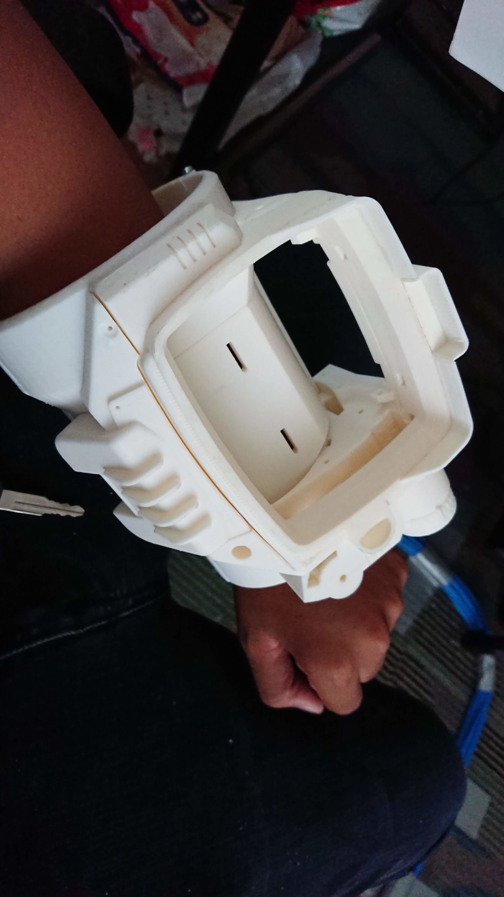
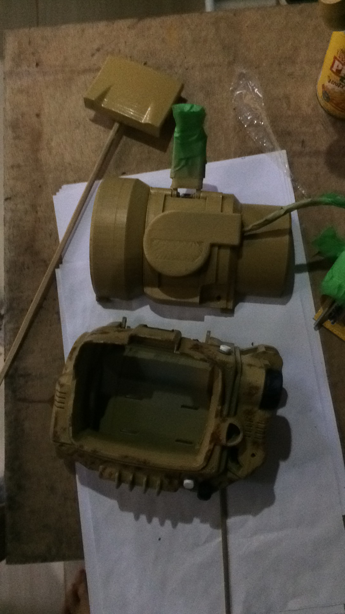
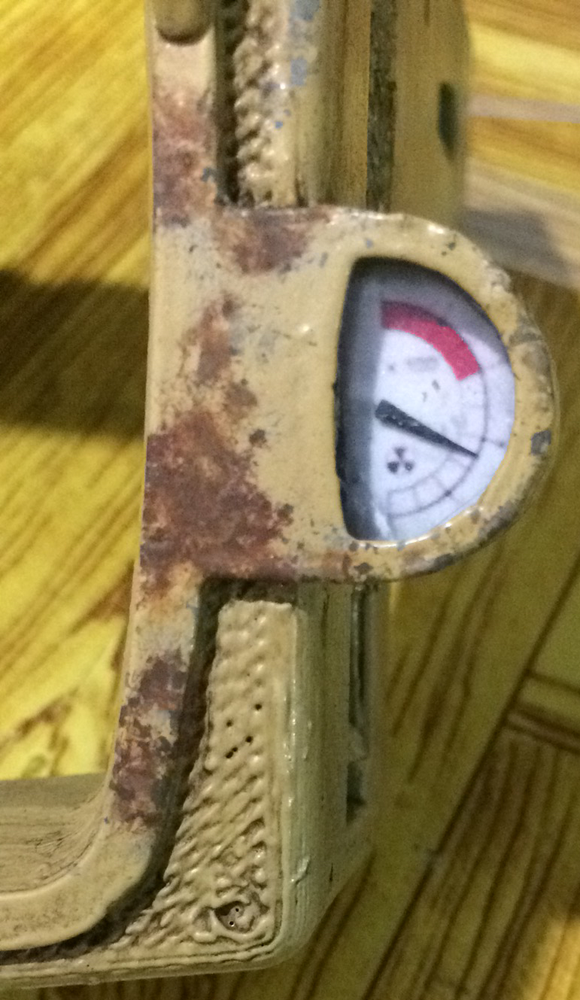
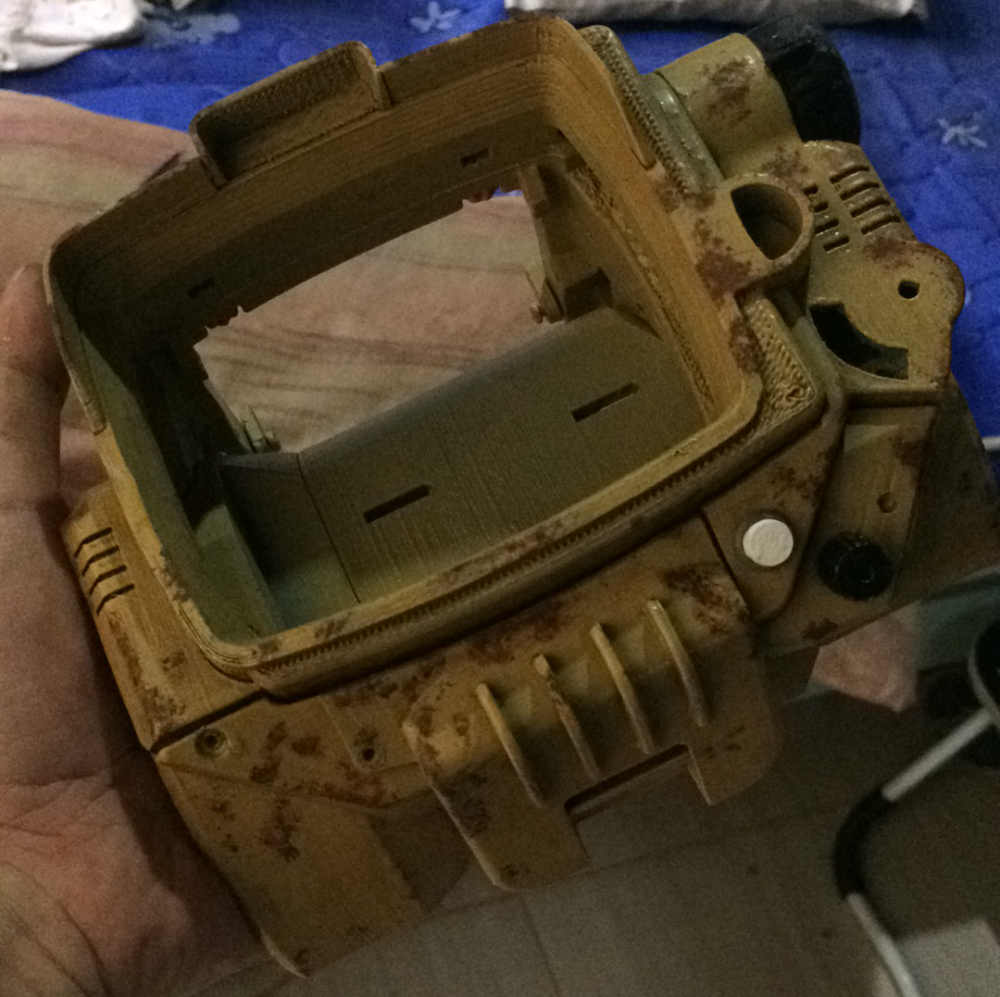

Fallout
I'm a big fan of the Fallout universe and our office recently had acquired a couple of 3D printers.
Made with ❤️ at Spring Valley ARK
The printer used is a LulzBot TAZ 6
I got the Pip-Boy 3D model from Yvo de Haas at https://ytec3d.com/pip-boy-3000-mark-iv/
Feel free to check out his site along with his other amazing projects.
Started print 2019-05-31 with ABS filament and assembly 2019-06-03


Print in progress video




Paint 2019-06-12

Perfect fit for my Sony XZ1 Compact and I installed the Pip-Boy app


Repaint 2021-03-10
This was done by my cousin and I was really amazed by the details and weathering he did





Pip-Boy TODO:
- fabric cuff
- phone frame
- lights
- missing light button
- raspberry pi replacement(?)
Update 2021-09-07
Pip-Boy boot sequence
I made a script pipboy-3000-boot which shows the Pip-Boy boot sequence. I copied it off from the .swf resources of the apk file Pip-Boy companion app.
Combined with cool-retro-term here's what it looks like.

Papercraft
I found a really cool website which features free papercraft models from different games, shows and movies! Check out Cubefold
You just need to print, cut, fold and glue. It takes time to make but it's really worth it.